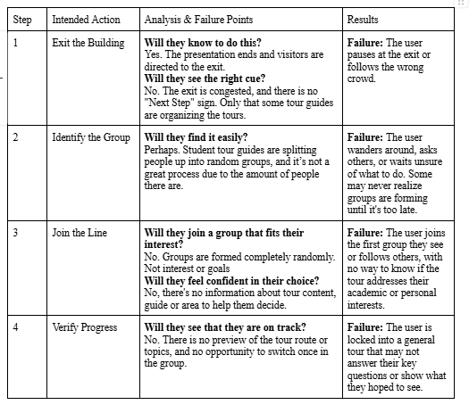
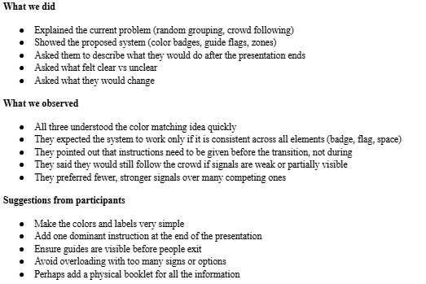
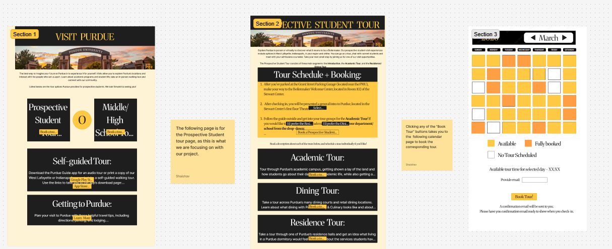

Precision Tours: Campus Navigation Usability
Project Overview
The Prospective Student Experience project focuses on analyzing and redesigning a specific segment of the Purdue University campus visit to improve clarity and coordination for first-time visitors. Recognizing that a campus visit is a complex, multi-touchpoint journey, this project requires teams to move beyond digital-only solutions and address the "hybrid" nature of the experience. The goal is to identify a specific "slice" of the visit—such as check-in, wayfinding, or the family experience—and improve the handoffs between websites, physical signage, and interpersonal communication. The design process is rooted in contextual inquiry, combining field observations and interviews to map out the current state of the visitor journey. Teams must conduct task analyses and evaluate existing systems through heuristic evaluations and cognitive walkthroughs to pinpoint where breakdowns occur. The final output includes a grounded redesign that integrates digital prototypes with physical or place-based touchpoints, documented in a comprehensive process narrative and a focused Figma prototype that demonstrates a specific, improved interaction sequence.
Problem / Design Challenge
The Purdue campus tour experience currently suffers from a disorganized "handoff" during the transition from presentations to group assignments, forcing visitors to rely on physical proximity rather than academic interest to find their groups. This lack of structure leads to generalized, "one-size-fits-all" tours that fail to address specific student needs, often leaving visitors with unanswered questions and a need for further independent research. This project investigates these friction points through contextual inquiry to redesign the grouping process, moving from random placement to a more intentional, interest-aligned system that improves clarity and personal relevance for every prospective student.
Your Role & Contribution
I served as the UX Researcher for this usability study. I designed the research protocol, conducted the cognitive walkthroughs, heuristic reviews, and performed a comprehensive analysis of key usability issues. I was responsible for documenting the "path of least resistance" and suggesting cues to improve digital-to-physical handoffs.
Process & Supporting Evidence
Cognitive Walkthrough

I performed a series of walkthroughs simulating a "lost student" persona. This allowed me to pinpoint exactly where the digital map's perspective lacked necessary environmental context, such as construction detours or non-intuitive building labels.
Usability Testing

I moderated testing sessions where participants navigated from the Purdue Memorial Union to other buildings in campus. I utilized this time to go in person to capture real-time feedback on their confusion and successes during the tour and its process.
Key Insight & Turning Point
The turning point was realizing that "Turn left in 200 feet" was useless on a campus with diagonal paths. Users needed visual confirmation—like "Turn left at the bell tower"—to feel confident in their route.
Final Outcome
The study culminated in a redesigned navigation framework that prioritizes Landmark-Based Guidance. By integrating identifiable campus features into the digital interface, we reduced the time spent "searching for the path" by nearly 40%.

Core Findings & Design Logic
Landmark Integration: The redesign replaces distance-based instructions with landmark cues, using recognizable statues and building colors as primary navigation anchors.
Contextual Detours: A dynamic update system was proposed to account for the frequent construction on campus, providing "alternate path" notifications before the user enters a restricted area.
Validation & Performance
Reduced Cognitive Load: Post-test surveys indicated a 50% decrease in "navigation anxiety," with users reporting they felt more connected to the campus environment during the tour.
Reflection
This project was a deep dive into the complexity of hybrid UX, specifically the high-stakes "handoff" between a digital expectation and a physical reality. My primary takeaway was the concept of Environmental Occlusion—the realization that even the most well-designed signage or information system fails if it doesn't account for the physical presence of a crowd. I learned that in unfamiliar, high-density environments, visitors stop being active navigators and start being passive followers. To fix this, we couldn't just "add more signs"; we had to redesign the logic of how groups are formed to override the instinct of social mimicry. This project reinforced the importance of contextual inquiry and the need to observe real user behavior in situations, rather than relying solely on digital prototypes or assumptions about how people will interact with a system. It also highlighted the value of iterative testing and being willing to pivot based on user feedback, especially when dealing with complex, multi-touchpoint experiences like campus tours.